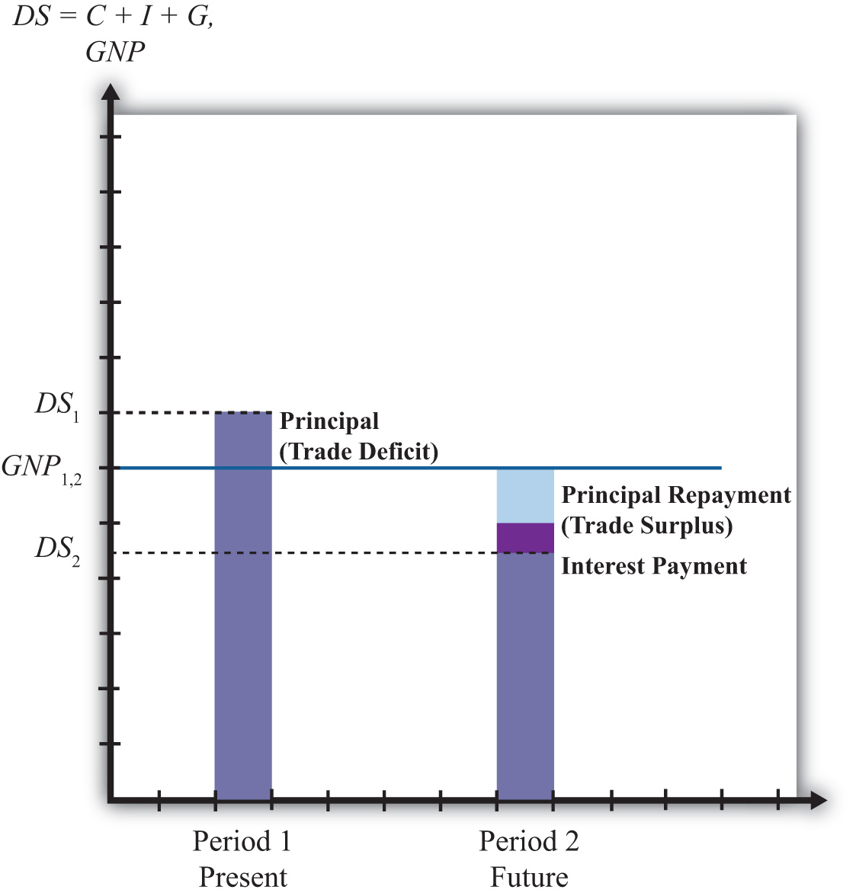
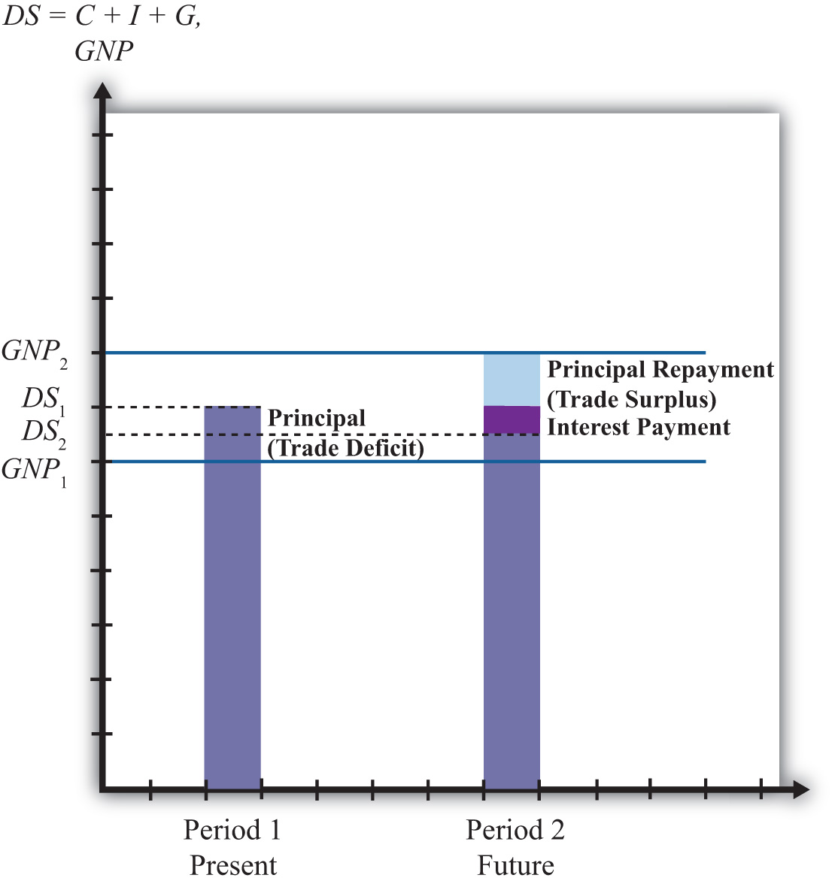
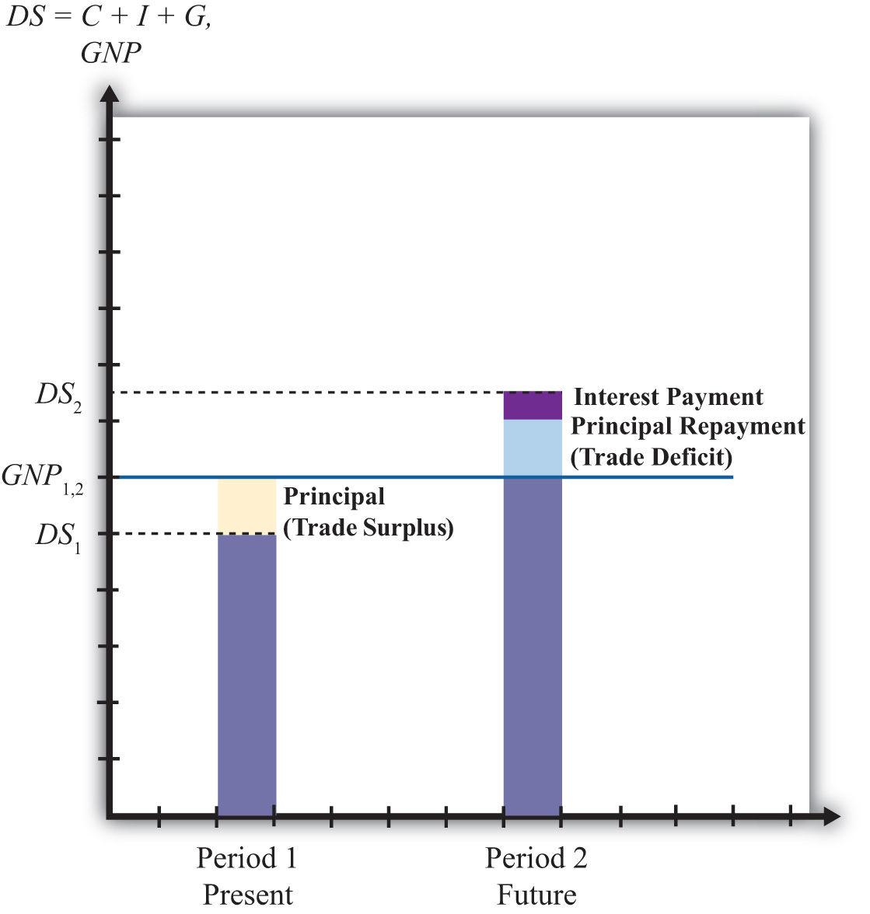

In this section, a series of simple scenarios (or stories) are presented to demonstrate how the well-being of a country may be affected when it runs a trade imbalance. The scenarios compare national output with domestic spending over two periods of time under alternative assumptions about the country’s trade imbalance and its economic growth rate between the two periods. After each aggregate scenario is presented, we also provide an analogous situation from the point of view of an individual. Finally we present an evaluation of each scenario and indicate countries that may be displaying similar trade patterns.
Two periods are used as a simple way to introduce the dynamic characteristics of trade imbalances. The amount of time between the two periods can be varied to provide alternative interpretations. Thus the two periods could be labeled as today and tomorrow, this year and next year, or this generation and next generation.
We assume that all trade imbalances correspond to debt obligations or IOUs (i.e., I owe you). In other words, the financial account imbalances that offset the trade imbalances will be interpreted as international borrowing and lending rather than, say, foreign direct investment flows or real estate purchases.
Afterward, we will comment on how the interpretations of these scenarios may change with the alternative type of asset flow.
National welfare is best measured by the amount of goods and services that are “consumed” by households. What we care about, ultimately, is the standard of living obtainable by the average citizen, which is affected not by how much the nation produces but by how much it consumes. Although gross domestic product (GDP)Measures the total value of all goods and services produced by a country during a year. is often used as a proxy for national welfare, it is an inadequate indicator for many reasons, especially when a country runs trade imbalances. To quickly see why, consider the extreme situation in which a country runs the largest trade surplus possible. This would arise if a country exports all of its GDP and imports nothing. The country’s trade surplus would then equal its GDP, but the citizens in the country would have no food, clothing, or anything else to consume. The standard of living would be nonexistent.
To avoid this problem we use domestic spending (DS)The sum of domestic consumption, investment, and government spending. Often used as a proxy for national welfare., or the sum of domestic consumption, investment, and government spending, as a proxy for national welfare. More formally, let
DS = C + I + G,where C, I, and G are defined as in the national income accounts. Recall from Chapter 16 "Interest Rate Parity" that C, I, and G each can be segmented into spending on domestically produced goods and services and spending on imported goods and services. Thus domestic spending includes imported goods in the measure of national welfare. This is appropriate since imported goods are consumed by domestic citizens and add to their well-being and standard of living.
One problem with using domestic spending as a proxy for average living standards is the inclusion of investment (note that this problem would also arise using GDP as a proxy). Investment spending measures the value of goods and services used as inputs into the productive process. As such, these items do not directly raise the well-being of citizens, at least not in the present period. To clarify this point, consider an isolated, self-sufficient corn farmer. Each year the farmer harvests corn, using part of it to sustain the family during the year, while allocating some of the kernels to use as seed corn for the following year. Clearly, the more kernels the farmer saves for next year’s crop, the less corn the family will have to consume this year. As with the farmer, the same goes for the nation: the more that is invested today, the lower will be today’s standard of living, ceteris paribus. Thus we must use domestic spending cautiously as a measure of national welfare and take note of changes in investment spending if it occurs.
The analysis below will focus on the interpretation of differences between national income (GDP) and domestic spending under different scenarios concerning the trade imbalance. The relationship between them can be shown by rewriting the national income identity.
The national income identity is written as
GDP = C + I + G + EX − IM.Substituting the term for domestic spending yields
GDP = DS + EX − IM,and rearranging it gives
EX − IM = GDP − DS.The last expression implies that when a country has a current account (or trade) surplus, GDP must exceed domestic spending by the equivalent amount. Similarly, when a country has a trade deficit, domestic spending exceeds GDP.
Note that to be completely accurate, we should use growth national product (GNP) rather than GDP in the analysis. This is because we are interpreting EX − IM as the current account balance that includes income payments and receipts. With income flows included on the trade side, the measure of national output we get is GNP not GDP. Because conceptually both are measures of national output, we will use GNP in everthing that follows in this section.
Case 1, what we will call the base case, is used to demonstrate how GNP compares with domestic spending in the simplest scenario. Here we assume that the country does not run a trade deficit or surplus in either of the two periods and that no GNP growth occurs between periods. No trade imbalance implies that no net international borrowing or lending occurs on the financial account. The case mimics how things would look if the country were in autarky and did not trade with the rest of the world.
Note from Figure 14.2 "Case 1" that domestic spending, shown as the aqua bar graph, is exactly equal to GNP in both periods. Since domestic spending is used to measure national welfare, we see that the average standard of living remains unchanged between the two periods. Overall, nothing very interesting happens in this case, but it will be useful for comparison purposes.
Figure 14.2 Case 1

Consider an individual named Rajiv. For an individual, GNP is analogous to Rajiv’s annual income since his income represents the value of goods and services produced with his labor services. Domestic spending is analogous to the value of the goods and services purchased by Rajiv during the year. It corresponds to Rajiv’s consumption of goods and services that serves as a proxy for his welfare level. Trade for an individual occurs whenever a transaction occurs with someone outside his household.
Let’s assume for simplicity that Rajiv earns $30,000 per year. The assumption of no GNP growth in the base case implies that he continues to earn $30,000 in the second period and thus experiences no income growth. The assumption of no trade imbalances implies that Rajiv engages in no borrowing or lending outside of his household. That implies that he spends all of his income on consumption goods and thus purchases $30,000 worth of goods and services. This level of consumption remains the same in both periods, implying that his standard of living is unchanged.
Another way of interpreting balanced trade for an individual is to imagine that he exports $30,000 worth of labor services and afterward imports $30,000 worth of consumption goods and services. Since exports equal imports, trade is balanced.
In this case, we assume that the country runs a current account (or trade) deficit in the first period. We’ll also assume that the resultant financial account surplus corresponds to borrowing from the rest of the world, rather than asset purchases. These borrowed funds are assumed to be repaid in their entirety in the second period. In other words, we’ll assume that loans are taken out in the first period and that the principal and interest are repaid completely in the second period. We also assume that there is no GNP growth between periods.
As shown in Figure 14.3 "Case 2", the trade deficit in the first period implies that domestic spending, DS1, exceeds GNP1. The difference between DS1 and GNP1 represents the current account deficit as well as the value of the outstanding principal on the foreign loans. The extra consumption the country can enjoy is possible because it borrows funds from abroad and uses them to purchase extra imports. The result is the potential for a higher standard of living in the country in the period in which it runs a current account deficit if the extra funds are not directed into domestic investment.
Figure 14.3 Case 2
In the second period, the borrowed funds must be repaid with interest. The repayment reduces domestic spending below the level of GNP by the amount of the principal and interest repayment as shown by the light-colored areas in the diagram.In actuality, the interest repayment component may be included as part of domestic spending since interest represents a payment for services received—those services being the privilege of consuming earlier. However, since this service is unlikely to raise one’s standard of living in period two, we have excluded it from domestic spending. Since GNP does not change between the two periods, DS2 will lie below GNP1. What this means is that the average standard of living can fall during the period in which the loan repayment is being made.
This outcome highlights perhaps the most important concern about trade deficits. The fear is that large and persistent trade deficits may require a significant fall in living standards when the loans finally come due. If the periods are stretched between two generations, then there is an intergenerational concern. A country running large trade deficits may raise living standards for the current generation, only to reduce them for the next generation. It is then as if the parents’ consumption binge is being subsidized by their children.
In case 2, our individual, Rajiv, would again have a $30,000 income in two successive periods. In the first period, suppose Rajiv borrows money, perhaps by running up charges on his credit card. Suppose these charges amount to $5,000 and that the interest rate is a generous 10 percent. Assuming Rajiv does not save money in the first period, his consumption level in the first period would be the sum of his income and his borrowed funds. Thus he would enjoy $35,000 worth of goods and services reflecting a standard of living higher than his actual income.
In the second period, Rajiv must pay back the $5,000 in loans plus the interest charges, which, at a 10 percent interest rate, would amount to $500. Thus $5,500 of Rajiv’s $30,000 income would go toward debt repayment, leaving him with only $24,500 to spend on consumption.
In this case, extra consumption, or a higher living standard in period one, is achieved by sacrificing a lower living standard in the future.
Note that in the first period Rajiv imports more goods and services in consumption than he exports in terms of labor services. Hence, this corresponds to a trade deficit. In the second period, Rajiv imports fewer goods and services in consumption than the labor services he exports; hence, this corresponds to a trade surplus.
Case two reflects legitimate concerns about countries that run large or persistent trade deficits. The case highlights the fact that trade deficits, which arise from international borrowing, may require a reduced average standard of living for the country in the future when the loans must be repaid.
An example of this situation would be Mexico during the 1970s and 1980s. Mexico ran sizeable current account deficits in the 1970s as it borrowed liberally in international markets.
In the early 1980s, higher interest rates reduced its ability to fulfill its obligations to repay principal and interest on its outstanding loans. Their effective default precipitated the third world debt crisis of the 1980s. During the 1980s, as arrangements were made for an orderly, though incomplete, repayment of Mexico’s loans, the country ran sizeable current account surpluses. As in case two here, Mexico’s current account deficits in the 1970s allowed it to raise its average living standards, above what would have been possible otherwise, while its current account surpluses in the 1980s forced a substantial reduction in living standards.
It is worth emphasizing that current account deficits are not detrimental in the periods in which the deficits are occurring. In fact, current account deficits correspond to higher consumption, investment, and government spending levels than would be possible under balanced trade. Instead, current account deficits pose a problem only when the debt repayment occurs, which is when the country is running current account surpluses. Trade deficits raise national welfare in the periods in which they occur, while trade surpluses reduce welfare in the periods in which they occur.
In other words, in terms of the national welfare effects, the problem here isn’t large or persistent trade deficits but rather the large and persistent trade surpluses that might arise in the future as a result.
It is also worth noting that trade deficits in this case need not be a problem in the long run if they are not too large. Just as an individual may make a choice to substitute future consumption for present consumption, so might a nation. For example, an individual may reasonably decide while young to take exotic vacations, engage in daredevilish activities, or maybe purchase a fast car, even if it means taking out sizeable loans. Better to enjoy life while healthy, he may reason, even if it means that he will have to forgo similar vacations or activities when he is older. Similarly, a nation, through an aggregation of similar individual decisions, may “choose” to consume above its income today even though it requires reduced consumption tomorrow. As long as the future reduced consumption “costs” are borne by the individuals who choose to overconsume today, deficits for a nation need not be a problem. However, if the decision to overconsume is made through excessive government spending, then the burden of reduced consumption could fall on the future generation of taxpayers, in which case there would be an intergenerational welfare transfer.
In the third case, we assume, as in case 2, that the country runs a trade deficit in the first period, that the trade deficit corresponds to borrowing from the rest of the world, and that in period two all the loans are repaid with interest. What differs here is that we will assume GNP growth occurs between the first and second periods. As we’ll see, growth can significantly affect the long-term effects of trade deficits.
In Figure 14.4 "Case 3", note that the first period domestic spending (DS1) lies above GNP in the first period (GNP1). This arises because a trade deficit implies that the country is borrowing from the rest of the world, allowing it to spend (and consume) more than it produces.
Figure 14.4 Case 3
In the second period, we assume that GNP has grown to GNP2 as shown in the graph. The principal and interest from first period loans are repaid, which lowers domestic spending to DS2. Note that since domestic spending is less than GNP2, the country must be running a trade surplus. Also note that the trade surplus implies that consumption and the average standard of living are reduced below the level that is obtainable with balanced trade in that period. In a sense, the trade deficit has a similar long-term detrimental effect as in case two.
However, it is possible that the first period trade deficit, in this case, may actually be generating a long-term benefit. Suppose for a moment that this country’s balanced trade outcome over two periods would look like the base case. In that case, balanced trade prevails but no GDP growth occurs, leaving the country with the same standard of living in both periods. Such a country may be able to achieve an outcome like case three if it borrows money from the rest of the world in period one—thus running a current account deficit—and uses those funds to purchase investment goods, which may in turn stimulate GNP growth. If GNP rises sufficiently, the country will achieve a level of domestic spending that exceeds the level that would have been obtained in the base case.
Indeed, it is even possible for a country’s standard of living to be increased in the long term entirely because it runs a trade deficit. In case three, imagine that all the borrowed funds in period one are used for investment. This means that even though domestic spending rises, the average standard of living would remain unchanged relative to the base case because investment goods generate no immediate consumption pleasures. In period two, the higher level of domestic spending may be used for increased consumption that would cause an increase in the country’s average living standards. Thus the country is better off in both the short term and long term with the unbalanced trade scenario compared to the balanced trade case.
The third case is analogous to our individual Rajiv with, say, a $30,000 income in period one. The trade deficit in the first period means that he borrows money using his credit card to purchase an additional, say, $5,000 worth of “imported” consumption goods. Thus in period one the person’s consumption and standard of living are higher than reflected by his income.
In the second period, the GNP rises, corresponding to an increase in Rajiv’s income. Let say that his income rises to $40,000 in the second period. We’ll also assume that all credit card loans must be repaid along with 10 percent interest charges in the second period. Consumption spending for Rajiv is now below his income. Subtracting the $5,000 principal repayment and the $500 interest payment from his $40,000 income yields consumption of $34,500.
The investment story above is similar to the case in which an individual takes out $5,000 in student loans in period one and earns an advanced degree that allows him to acquire a better-paying job. Assuming the educational investment does not add to his consumption pleasures (a seemingly reasonable assumption for many students), his welfare is unaffected by the additional spending that occurs in period one. However, his welfare is increased in period two since he is able to consume an additional $4,500 worth of goods and services even after paying back the student loans with interest.
The lesson of case three is that trade deficits, even if large or persistent, will not cause long-term harm to a nation’s average standard of living if the country grows rapidly enough. Rapid economic growth is often a cure-all for problems associated with trade deficits.
In some cases, it is possible for growth to be induced by investment spending made possible by borrowing money in international markets. A trade deficit that arises in this circumstance could represent economic salvation for a country rather than a sign of economic weakness.
Consider a less-developed country. Countries are classified as less developed because their average incomes are very low. Indeed, although many less-developed countries, or LDCs, have a small, wealthy upper class, most of the population lives in relative poverty. Individuals who are poor rarely save very much of their incomes, therefore, LDCs generally have relatively small pools of funds at home that can be used to finance domestic investment. If investment is necessary to fuel industrialization and economic growth, as is often the case especially in early stages of development, an LDC might be forced to a slow or nonexistent growth path if it restricts itself to balanced trade and limits its international borrowing.
On the other hand, if an LDC borrows money in international financial markets, it will run a trade deficit by default. If these borrowed funds are used for productive investment, which in turn stimulates sufficient GDP growth, then the country may be able to raise average living standards even after repaying the principal and interest on international loans. Thus trade deficits can be a good thing for less-developed countries.
The same lesson can be applied to the economies in transition in the former Soviet bloc. These countries suffered from a lack of infrastructure and a dilapidated industrial base after the collapse of the Soviet Union. One obvious way to spur economic growth in the transition is to replace the capital stock with new investment: build new factories, install modern equipment, improve the roads, improve telecommunications, and so on. However, with income falling rapidly after the collapse, there were few internal sources to fund this replacement investment. It was also not obvious which sectors were the best to invest in. Nevertheless, one potential option was for these countries to borrow funds on international financial markets. Trade deficits that would occur under this scenario could be justified as an appropriate way to stimulate rapid economic growth.
Of course, just because trade deficits can induce economic growth and generate long-term benefits for a country doesn’t mean that a trade deficit will spur long-term economic growth. Sometimes investments are made in inappropriate industries. Sometimes external shocks cause once profitable industries to collapse. Sometimes borrowed international funds are squandered by government officials and used to purchase large estates and big cars. For many reasons good intentions, and good theory, do not always produce good results. Thus a country that runs large and persistent trade deficits, hoping to produce the favorable outcome shown in case three, might find itself with the unfavorable outcome shown in case two.
Finally, a country running trade deficits could find itself with the favorable outcome even if it doesn’t use borrowed international funds to raise domestic investment. The United States, for example, has had rather large trade deficits since 1982. By the late 1980s, the United States achieved the status of the largest debtor nation in the world. During the same period, domestic investment remained relatively low especially in comparison to other developed nations in the world. One may quickly conclude that since investment was not noticeably increased during the period, the United States may be heading for the detrimental outcome. However, the United States maintained steady GNP growth during the 1980s and 1990s, except during the recession year in 1992. As long as growth proceeds rapidly enough, for whatever reason, even a country with persistent deficits can wind up with the beneficial outcome.
In this case, we assume that the country runs a trade surplus in the first period and that no GDP growth occurs between periods. A surplus implies that exports exceed imports of goods and services and that the country has a financial account deficit. We will assume that the financial account deficit corresponds entirely to loans made to the rest of the world. We can also refer to these loans as savings, since the loans imply that someone in the country is forgoing current consumption. In the future, these savings will be redeemed along with the interest collected in the interim. We shall assume that all of these loans are repaid to the country with interest in the second period.
In Figure 14.5 "Case 4", we see that in the first period, when the trade surplus is run, domestic spending (DS1) is less than national income or GDP. This occurs because the country is lending rather than consuming some of the money available from production. The excess of exports over imports represents goods that could have been used for domestic consumption, investment, and government spending but are instead being consumed by foreigners. This means that a current account surplus reduces a country’s potential for consumption and investment below what is achievable in balanced trade. If the trade surplus substitutes for domestic consumption and government spending, then the trade surplus will reduce the country’s average standard of living. If the trade surplus substitutes for domestic investment, average living standards would not be affected, but the potential for future growth can be reduced. In this sense, trade surpluses can be viewed as a sign of weakness for an economy, especially in the short run during the periods when surpluses are run. Surpluses can reduce living standards and the potential for future growth.
Figure 14.5 Case 4
Nevertheless, this does not mean that countries should not run trade surpluses or that trade surpluses are necessarily detrimental over a longer period. As shown in the diagram, when period two arrives the country redeems its past loans with interest. This will force the country to run a trade deficit, and domestic spending (DS2) will exceed GDP. The trade deficit implies imports exceed exports, and these additional imports can be used to raise domestic consumption, investment, and government spending. If the deficit leads to greater consumption and government spending, then the country’s average standard of living will rise above what is achievable in balanced trade. If the deficit leads to greater investment, then the country’s potential for GDP growth in the third period (not shown) is enhanced.
Briefly, this case describes the situation in which a country forgoes first period consumption and investment so that in period two it can enjoy even greater consumption and investment.
Consider our individual, Rajiv, who has an annual income of $30,000 over two periods. This corresponds to the constant GDP in the above example. Rajiv would run a trade surplus in period one if he lends money to others. One way to achieve this is simply to put money into a savings account in the local bank. Suppose Rajiv deposits $5,000 into a savings account. That money is then used by the bank to make loans to other individuals and businesses. Thus in essence Rajiv is making loans to them with the bank acting as an intermediary. The $5,000 also represents money that Rajiv does not use to buy goods and services. Thus in period one Rajiv exports $30,000 of labor services, but imports only $25,000 of consumption goods. The excess is loaned to others so that they may be consumed instead in the first period. It is clear that Rajiv’s standard of living at $25,000 is lower in the first period than the $30,000 he could have achieved had he not deposited money into savings.
In the second period, we imagine that Rajiv again earns $30,000 and withdraws all the money plus interest from the savings account. Suppose he had earned 10 percent interest between the periods. In this case, his withdrawal would amount to $5,500. This means that in period two Rajiv can consume $35,500 worth of goods and services. This outcome also implies that Rajiv’s domestic spending capability exceeds his income and so he must be running a trade deficit. In this case, Rajiv’s imports of goods and services at $35,500 exceed his exports of $30,000 worth of labor services; thus he has a trade deficit.
Is this outcome good or bad for Rajiv? Most would consider this a good outcome. One might argue that Rajiv has prudently saved some of his income for a later time when he may have a greater need. The story may seem even more prudent if Rajiv suffered a significant drop in income in the second period to, say, $20,000. In this case, the savings would allow Rajiv to maintain his consumption at nearly the same level in both periods despite the shock to his income stream. This corresponds to the words of wisdom that one should save for a rainy day. Savings can certainly allow an individual to smooth his consumption stream over time.
Alternatively, one might consider the two periods of the story to be middle age and retirement. In this case, it would make sense to save money out of one’s income in middle age so that one can draw on those savings and their accumulated earnings during retirement when one’s income has fallen to zero.
On the other hand, excessive saving in the first period might make Rajiv seem miserly. Few people would advise that one save so much as to put oneself into poverty or to reduce one’s living standard below some reasonable norm. Excessive prudence can seem inappropriate as well.
The prime example of a country that mimics the first period of case four is Japan during the 1980s and 1990s. Japan ran sizeable trade surpluses during those two decades. As this story suggests, the flip side of the trade surplus is a financial account deficit that implied a considerable increase in the amount of loans that Japan made to the rest of the world. Although Japan’s trade surplus has often been touted as a sign of strength, an important thing to keep in mind is that Japan’s trade surpluses implied lower consumption and government purchases, and thus a lower standard of living than would have been possible with balanced trade. Although trade surpluses can also result in lower investment, this effect was not apparent for Japan. During those two decades of investment, spending as a percentage of GDP always exceeded 25 percent, higher than most other developed countries.
These surpluses may turn out to be especially advantageous for Japan as it progresses in the twenty-first century. First of all, it is clear that Japan’s surpluses did not usher in an era of continual and rapid GDP growth. By the early 1990s, Japan’s economy had become stagnant and finally began to contract by 1998. However, rather than allowing a decline in GDP to cause a reduction in living standards, Japan could use its sizeable external savings surplus to maintain consumption at the level achieved previously. Of course, this would require that Japan increase its domestic consumption and begin to run a trade deficit, two things that did not occur even by 2009.
In another respect, Japan’s trade surpluses may be advantageous over the longer run. Japan, along with most other developed nations, will experience a dramatic demographic shift over the next three decades. Its retired population will continue to grow as a percentage of the total population of the baby boomers reach retirement and people continue to live longer. The size of the Japan’s working population will consequently decline as a percentage of the population. This implies an increasing burden on Japan’s pay-as-you-go social retirement system as a smaller number of workers will be available per retiree to fund retiree benefits. If at that time Japan draws down its accumulated foreign savings and runs trade deficits, it will be able to boost the average consumption level of its population while reducing the need to raise tax burdens to fund its social programs. Of course, this outcome may never be realized if Japan’s economy does not rebound strongly from its recent stagnant condition.
Overall, regardless of the outcome, Japan’s economy today, faced with a potentially severe recession, is certainly in a stronger position by virtue of its accumulated foreign savings than it would be if it had run trade deficits during the past two decades.
These stories suggest that trade imbalances, when evaluated in terms of their momentary effects and their long-term economic consequences, can be either good, bad, or benign, depending on the circumstances.
Trade deficits may signal excessive borrowing that could in the future lead to possible default, or worse, an excessive reduction in living standards needed to repay the accumulated debt. In this case, the trade deficit is clearly bad for the nation. Alternatively, trade deficits may represent a country that is merely drawing down previously accumulated foreign savings or selling other productive assets, in which case there is no potential for default or reduced living standards in the future. Here, the trade deficit is either immaterial or even beneficial in that the nation is able to achieve a higher current living standard because of the deficit. Trade deficits might also make an expansion of domestic investment possible, which could spur future economic growth sufficiently to make repayment consistent with growing living standards. In this case, trade deficits are clearly good as they stimulate future economic prosperity. Finally, in a free market economy, trade deficits may simply reflect the aggregated choices of many individuals to forgo future consumption to achieve more current consumption. In this case, the trade deficit should be viewed as immaterial since it merely reflects the free choices of the nation’s people.
On the other hand, a trade surplus may correspond to prudent foreign saving and purchases of foreign productive assets, which may be used to support a growing retired population in the future. In this case, the trade surplus is a good thing for the nation. The trade surplus might also represent a period of repayment of past debt. This outcome may be acceptable if achieved together with growing living standards. However, if the surplus arises in a period of slow growth or falling GDP, then the surplus would correspond to painful reductions in living standards, which is clearly a bad outcome for the country. Finally, the trade surplus may occur as a result of the aggregated choices of many individuals who have acquired greater past consumption by forgoing current consumption. In this case, the surplus should be viewed as immaterial to the nation as a whole.
Consider the Japanese economy over two periods of time: first period (today) and second period (the future). Suppose Japanese GDP today is $2,000 billion (we’ll use the U.S. dollar rather than the yen). Suppose Japan runs a current account surplus of 5 percent of GDP in the first period and lends money at the market interest rate of 5 percent.
Consider the following situations describing the actions of an individual household. Explain whether each situation is analogous to a country running a trade deficit, a trade surplus, or neither. Briefly explain why.
Suppose that each situation listed is the dominant effect on a country’s balance of payments. Indicate by filling in the blank spaces whether the current account and capital account will be in surplus or deficit.
| Current Account Balance | Financial Account Balance | |
|---|---|---|
| a. A country is a net borrower from the rest of the world | ||
| b. A country is repaying past debts | ||
| c. A country exports more goods and services than it imports | ||
| d. A country sells foreign assets and repatriates the proceeds | ||
| e. A country is a net lender to the rest of the world | ||
| f. A country earns more income on foreign assets than foreigners earn in its country |